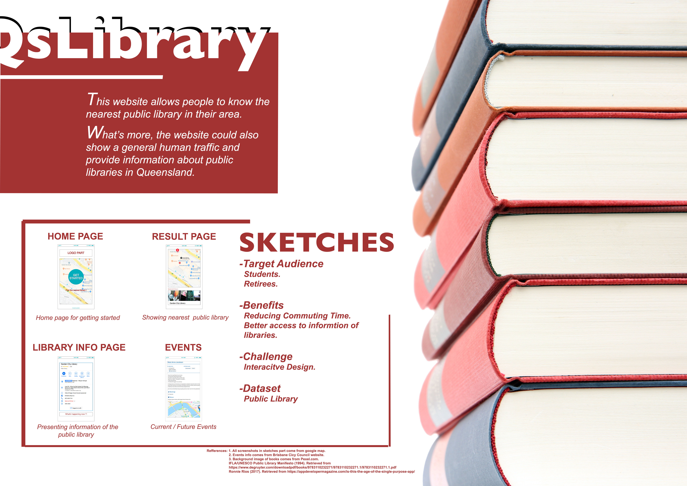
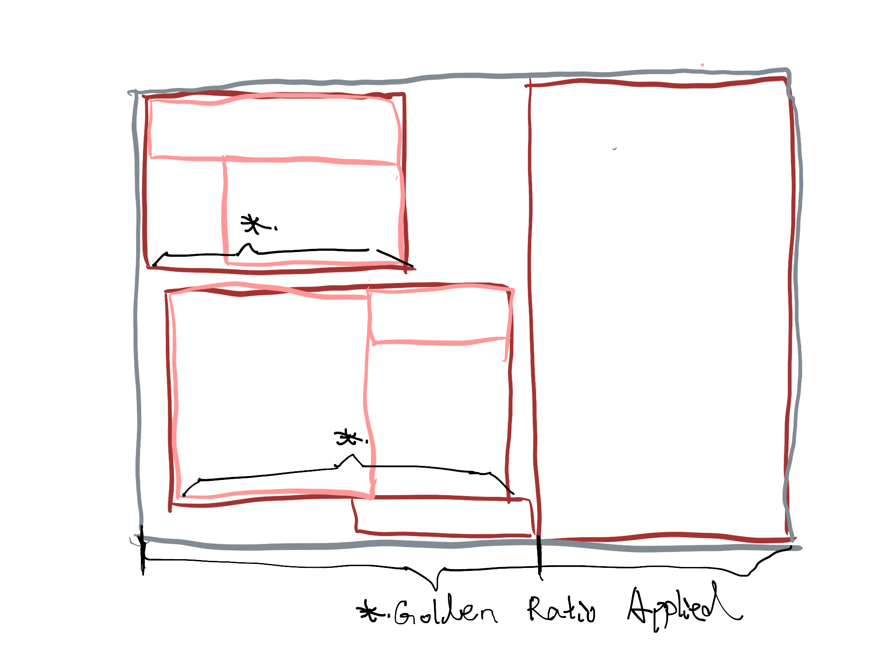
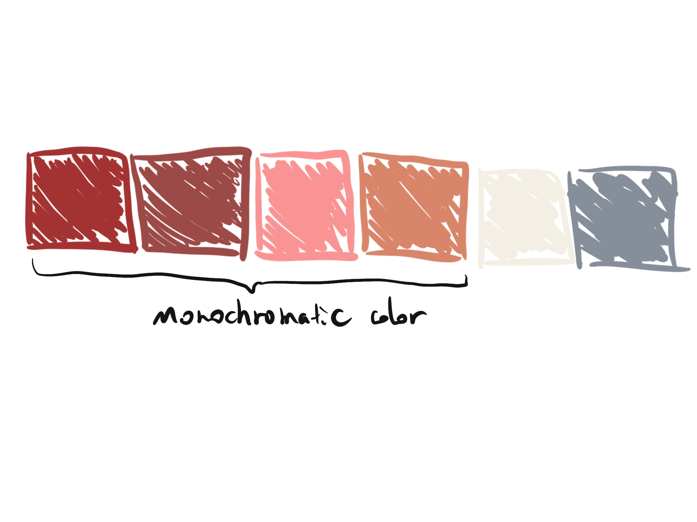
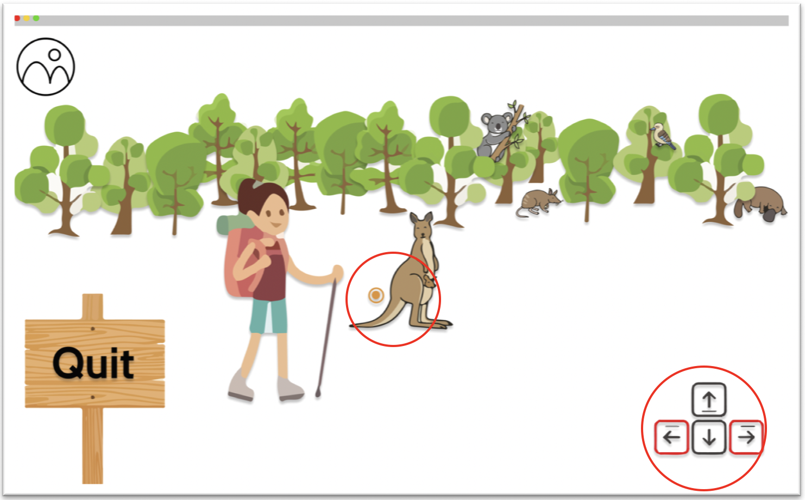
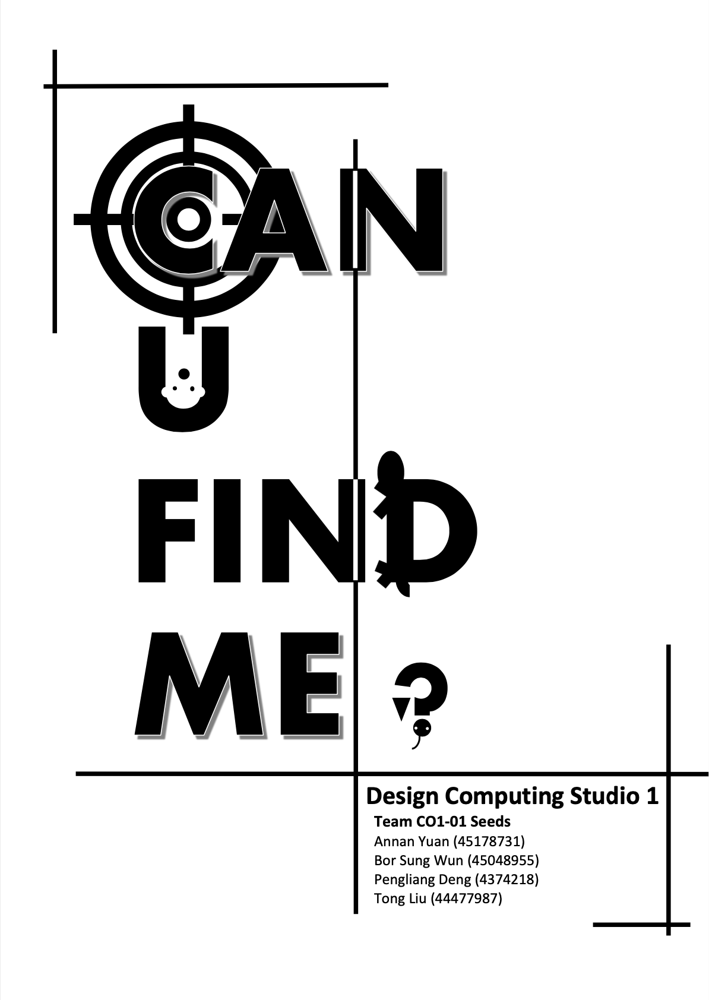
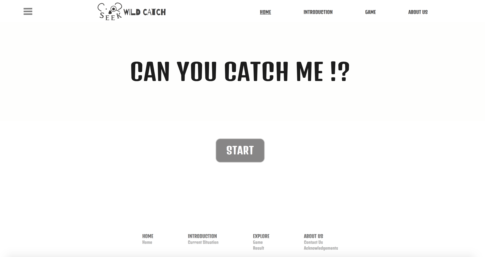
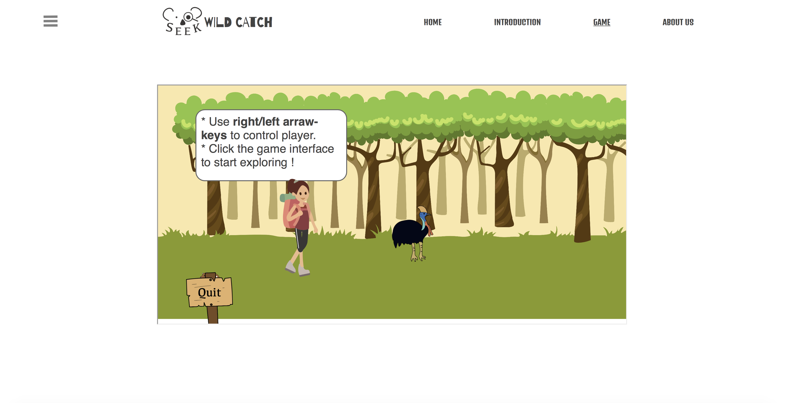
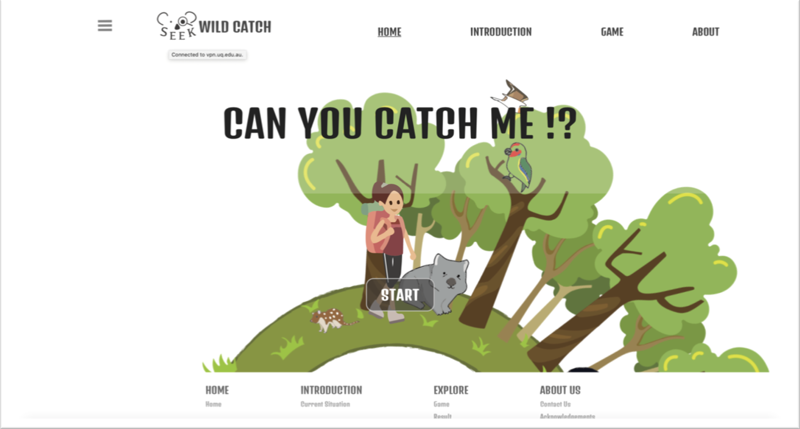
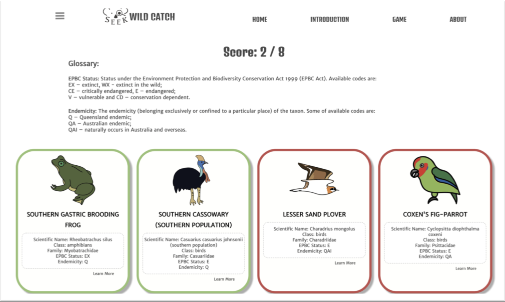

Task Description: Design exploration is an activity of the first weeks. This activity is an indivisual work requiring students to explore given background materials and existing websites or applications and generate novel ideas. Students would have a pitch presentation to express their concepts to the class. The ideas generated in this section could be a basis for the next team-based major project.
MY CONCEPT
My concept is to develop a website that allows users to find public state libraries near their place and also provides extra information about the libraries, like Wi-Fi available, fees for entry, booking services and etc...
The dataset I chose is Queensland public libraries from State Library of Queensland. The target group would be students and retirees. They could use this website to find the nearest library to go. Through Google Map API, they can even find different transportations.
POSTER
Below is the poster I created for pitch presentation.

REFLECTION
Overall, I was happy about what I have done for this design exploration. The pitch was not perfect as what I expected because I didn't finish my pitch in 3 mins, but the result was acceptable. In this section, we also did a lot of activities, like brainstorming, group discussion and six thinking hats. These activities are great in terms of generating ideas, especially, the six thinking hats. Basically, that activity is to give feedbacks of the concept that we discuss according to 6 different aspects to have a more comprehensive feasibility analysis. Through the section, I learned how to reflect on an idea and practiced my design skills by making a poster.
IDEATION
After we had some brainstorm activities, I found that ideas of most of us are quite similar since most resources are restrained to a narrow domain of histroy. And we were kind of generating the same stuff and nothing new or fancy thought came out. I guess this would be a problem for our students who lack of design mindsets.
Therefore, my initial idea was to use the dataset of State Library of Queensland - Picture Queensland since I thought It would be a good idea to have a kind of history gallery website of Brisbane to show the beauty of Brisbane from 1800s to 1900s... What is more, this dataset provides a variety of photos during 1800s to 1900s. These are some photos of buildings or portraits.
Then, when doing a six thinking hats activity, our small group had an idea of building a searching application to find state libraries which was the base of my final concept. In conclusion, if we want to build a website about public library, there are something we should know. (Below content is credited by some classmates.)
What people may want to know about the library.
How many libraries exist.
Location of libraries. (Are they close to shopping malls, coffee shops, transportation hubs)
What services do the libraries provide? (Meeting spaces, WI-FI, Charging Stations, Child Care, Coffee)
Book collections available.
Rules (How to borrow books, membership requirements)
Routes ( How to get to the library, travel times, parking and end of trip facilities)
Opening Times
Gift Shop
And then we want to know why people may want to use the library.
Free WI-FI
Study Space. (Quiet, Focused Study)
Meetings for study / projects
Book Collections.
And who may want to use the library. (What is our target group ?)
University Students
High School Students on School Visits
Over 50s (Retirees)
Unemployed People (because you don't have to pay a lot of money to have the services public libraries provide, usually free.
Tourists
Last, this project would be useful for:
Shorten commuting time. (for people want to find a nearest library)
Be better informed regarding services provided by the library
However, drawbacks of this project are obvious as well.
This project is not so interesting and the value it provided is not much.
When I took this idea as my concept, I tried to add more functionalities to the concept because there are Google Map out there to be used for this purpose. Finally, I would like to make the app to provide services and information of events that libraries have so that users could check not only locations but also other services libraries could offer. Furthermore, they can get access to services through our website/application.
POSTER DESIGN
In terms of design aspect, I only had experience with very basic operations with Photoshop and Adobe Illustrator. Although the tools on my hands are limited, I believe they are enough to create a fine poster if I am more familiar with them. However, what I really need is design knowlege since I did not deepen my hobby into a professional level. Therefore, I did some research on how to design a good-looking poster and some design principles for inspiration.
After exploring some online articles about aesthetic design, I summarize them as five aspects I think are of importance, namely colour, typography, balance of content, hierarchy and alignment. When I design my poster, I frequently used the golden ratio for my layout design and tried to apply color harmony rule, specifically the monochromatic color schemes. Below are sketches of my poster layout and the color set.


Overall, I am quite satisfied with this poster design. The layout looks nice. The visual weight of content is balanced and colors look harmonious and pleasing.
SHOW MORE
Task Description: Part A of the major project is design proposal. In this part, we are required to form an official group of 4 people to complete the major project. The major project is to conceptualise, refine and implement a web-based application that presents the data content from
State Library of Queensland in an engaging and interactive manner. At the end of this section, each group needs to have their concept decided and write a design proposal and represent the concept to the class.
PROJECT CONCEPT
Our team decided to build a game-based website to illustrate the data of different levels of endangered wild
animals. This data will be used and expressed in an interactive find-and-catch game where users play as an adventurer who is trying to find the wildlife in the woods. We hope our project could enhance the understanding of that knowledge and our audience could develop awareness of protecting endangered species for the educational purpose. Below is the draft of our concept credtied by our designer Annan.

MY CONTRIBUTION
Being the leader to lead team meetings and make work arrangements.
Collected and organized the documents of team members.
Designed proposal cover and layout.
Wrote or edited several parts including the purpose, interaction, one persona and completion plan of the proposal.
Researched techniques required for developing a web-based game.
REFLECTION
On the whole, part A was successful since we came up with an interesting idea for the project. We are also clear about the interactions and task allocations. Therefore, we were able to get started with next section Part B. The major concern of mine is the web-based game as it was the most important feature of our website. The success of our project would heavily rely on the game's interactions. However, none of us had experience of designing a game from the aspect of design concept or skillsets required. Luckily, it turned out to be good in the trade show. Although our project still has a lot to be refined and condidered, we were happy with the start.
IDEATION
After we formally formed a team group. I volunteered to be the leader and then drafted a document for team members to write their ideas of the project. Ideation process was hard since the data from the datasets is kind of boring. Coming up with an engaging and interesting web application was difficult. The easiest way to make a website interesting is to develop a game. Having a game-based website was quickly surpported by team members. And I've got two initial ideas based on my play-game experience.
Topic: Environment
Consider to build a game-based website for users to play with. In this game, users need to play as a “bad” guy. They can use the tools they have to make a beautiful environment become worse. A dynamic change is showing to the environment and pop up a webpage to tell users about the corresponding knowledge. This idea is inspired by one mobile game named Plague Inc.
Advantages: more fun.
Disadvantages: technical challenges, more APIs needed
Topic: Historical Pictures
Consider building a puzzle game having different levels for users to play with. When they successfully complete the puzzle of one picture. The detailed info about that picture would be given as a reward. They could review their pictures in a gallery part of the website.
Advantages: technical aspect would be easier comparing to the Environment one. The dataset of picture Queensland provides almost enough resources for use.
Disadvantages: This website is kind of “traditional”.
After the meeting in the first, my initial ideas were abandoned. One about endangered animals which was the final concept of our project was accepted by all of us.
RESEARCH
I was in charge of researching of game interactions. Therefore, I looked through some tutorials available on the Internet. I found out that most techniques, like the Canvas, Unity and etc, used for developing web-based game were not easy to master in a very limited time we had for implementing the whole website. We were not familiar with APIs available for game designing as well.
Considering the difficulty and time constraint, I decided to choose simply html, css and jQuery/JavaScript as the implementation tool (like using jQuery to control very simple css animation to achieve the expected interations we tried to implement in the game.
PROPOSAL COVER
I designed the cover of our proposal. I tried to use more design knowledge I learned from the Internet like using transparency to create a feeling of dynamic or using blur effects to create movement and so on. In my proposal cover design, I used two techniques, contrast and negative color space. From picture below, you can see that I used black letters and white space to create animals'shape. I was proud of what I have created since it combined the topic of our project with the feature of our game (a catch and found game) together.

SHOW MORE
Task Description: Part B is the progress demo. In this section, we should have concept decided and start implementation and overcoming issues through the process. At the end of this section, we need to have a minimum viable product and will have a demo presentation to show the MVP. Therefore, basically this section is set to ensure our progress of implementing go well.
Minimum Viable Product
The website's layout was completed having side navigation, main navigation and footer working. Most pages we were trying to have were made while the detailed information pages had not yet been done since we have not chosen all animals that we would like to put in game. Most contents were missing as well. Moreover, currently the website was not responsive resulting in the layout breakdown showing in different size of browsers' window.
In terms of interactions, most of them were completed, for example clicking animals to pop up information retrieved from datasets, keyboard control of players and css animation of animals' behaviours, except the score board, line chart showing in introduction page and homepage's animation.


MY CONTRIBUTION
Implemented the functionality to retrieve SLQ API's data.
Implemented all the game's functionalities like pop-up window when click animals, movement control of players and so on.
Implemented the responsive score board showing final scores according to users' performance in game. (credtied by Tong)
Implemented the home page's animation.
Implemented the layout of the website.
REFLECTION
In general, things were going well since we successfully implemented most functionalities of what we wanted. However, I felt a little overwhelming since I felt that I did a majority of programming work. As a leader, I didn't know how to use Git and some other distributed version control system at that moment, making my work-load even bigger. I would definitely use these version control systems for coordinate work among programmers. In addition, I lacked the aesthetic design practice in the Part B section. Most pictures used in our website were created by one designer Annan. Until now, I still feel it is hard to distribute the design work to multiple people if we want to keep the style of illustrates consistent. Lastly, we didn't do many user tests which was really a regret. As a whole, our group was progressing well.
GAME IMPLEMENTATION
The game interface was implemented as an iframe component in the game page so that players could have a similar movement effect when press the key-arrow in the keyboard. Other functionalities are just completed by some basic css animation with jQuery. Later, since Tong had a hard time implementing the score board while my part was nearly finished. I decided to help her to implement that functionality by using local storage with some JavaScript. The homepage animation is easy by using css only (making the background image rotate, fixing the person's position). Below are screenshots of our final homepage and score board.


FEEDBACKS
The feedbacks from the demo presentation were focusing on the content that was missing and the success criteria was not in detail. We refined these part when we wrote the final report.
SHOW MORE
Finally, the last section of the major project is the tradeshow. Groups will exhibit their final applications to all the people who come to your table. Students will also submit a final report to keep record of final application and the outcomes.
MY CONTRIBUTION
Presenter in trade show.
Final report cover design.
RESULT
Tradeshow turned out to be a good result. Users came to our table and played with the game. They found out that the game were quite engaging and interesting. Some users also mentioned that our homepage's animation was attractive and they came to play with our website because of that, showing that our animation of homepage was a good feature. Also, thanks to our designer Annan, users were glad with the cartoon pictures of our website.
However, there were still some unexpected behaviours from users. For example, the instruction said that user should click the game interface to start the game. A quite number of players ignore that part and stuck. I thought this could be the reason that the instruction is not so eye-catching. In the future refinement, this could be fixed by making the instructions more noticeable and probably compulsury. And it seemed like not many people had a look at the content, showing that we still needed to work on the content to make it represented in an interesting way.
REFLECTION
As a whole, WildCatch was a successful website for people play with. From people's feedbacks, there still are some work needed like adding more animals and making the detailed content more interesting and so on. Overall, the project was completed well. All of us were satisfied with what we have achieved.